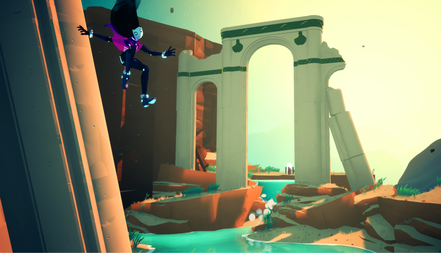

Are you ready for an epic summer of gaming? As a young gamer interested in
indie games, there's a plethora of exciting titles on the horizon that are sure
to captivate your imagination and keep you entertained for hours on end. From
highly anticipated sequels to stunning pixel art wonders, the indie game scene
is buzzing with creativity and innovation. In this article, we'll take a closer
look at five of the best upcoming indie games to watch this summer. Stay tuned!
Silksong - Team Cherry
If you're a fan of the critically acclaimed game Hollow Knight, then Silksong
is undoubtedly on your radar. Developed by Team Cherry, Silksong is the highly
anticipated sequel to Hollow Knight and promises to be an epic adventure filled
with challenging platforming, mesmerizing pixel art, and a captivating story. As
Hornet, the skilled warrior and protector of Hallownest, players will explore
new lands, battle fearsome foes, and uncover secrets in this eagerly awaited
indie game. With its beautiful hand-drawn visuals, intricate gameplay mechanics,
and immersive world, Silksong is a must-watch title for any indie game
enthusiast.
Eastward - Pixpil/Chucklefish
If you're a fan of retro-inspired pixel art and captivating narratives, then
Eastward is a title to watch out for. Developed by Pixpil and published by
Chucklefish, Eastward is an action-adventure RPG that follows the journey of a
miner named John and a mysterious girl named Sam as they explore a
post-apocalyptic world filled with strange creatures and hidden secrets. With
its charming characters, stunning pixel art, and a compelling story that
combines elements of mystery, exploration, and combat, Eastward is set to be a
standout indie game this summer.
Sable - Shedworks/Raw Fury
Embark on a mesmerizing journey through an open-world desert in Sable, an
upcoming indie game developed by Shedworks and published by Raw Fury. In Sable,
players will take on the role of a young explorer named Sable as she sets out on
a personal pilgrimage to uncover the mysteries of her world. With its
breathtaking hand-drawn visuals, serene soundtrack, and unique gameplay
mechanics that blend exploration, puzzle-solving, and platforming, Sable
promises to be a meditative and enchanting indie game that will transport
players to a world like no other.
Garden Story - Picogram/Rose City Games
If you're a fan of cute and charming indie games, then Garden Story is sure
to capture your heart. Developed by Picogram and published by Rose City Games,
Garden Story is a wholesome and delightful action-adventure game where players
take on the role of a tiny grape named Concord as he embarks on a quest to save
his community. With its adorable pixel art, heartwarming story, and a unique
blend of combat, farming, and socializing, Garden Story offers a fresh and
relaxing gameplay experience that's perfect for summer gaming sessions.
Solar Ash - Heart Machine/Annapurna Interactive
From the creators of the critically acclaimed indie game Hyper Light Drifter
comes Solar Ash, an upcoming action-adventure game that promises to be a visual
and auditory feast for the senses. Developed by Heart Machine and published by
Annapurna Interactive, Solar Ash takes players on a surreal and otherworldly
journey through a mysterious black hole. With its stunning visuals, immersive
sound design, and thrilling gameplay that combines exploration, platforming, and
high-speed traversal, Solar Ash is shaping up to be an indie game that pushes
the boundaries of what's possible.

In conclusion, this summer is shaping up to be an exciting time for young
gamers interested in indie games. With a diverse range of titles on the horizon,
from the highly anticipated Silksong to pixel art wonders like Sable, Eastward,
Garden Story, and Solar Ash, there's something for everyone to look forward to.
These indie games are redefining what it means to have fun in the gaming
landscape, offering unique gameplay mechanics, breathtaking visuals, and
captivating stories that are sure to capture the hearts and minds of young
gamers. As the indie game scene continues to thrive, it's clear that these games
are shaping the gaming landscape in unprecedented ways. With their innovative
approaches to storytelling, gameplay, and art styles, indie games are pushing
the boundaries of what's possible in gaming and capturing the imaginations of
players young and old. So, keep an eye out for these upcoming indie games this
summer and get ready for epic adventures, pixel art delights, and unforgettable
experiences that will keep you glued to your screen and immersed in the world of
indie gaming!